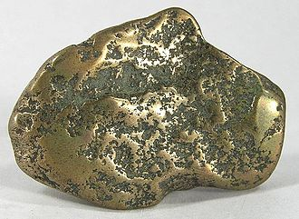
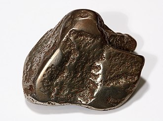

Mohawkite is a rare rock consisting of mixtures of arsenic, silver, nickel, skutterudite and copper, with the formula Cu3As up to Cu6As, and the most desirable material was usually found in a white quartz matrix. It has a hardness of 3–3.5 and a metallic luster. It is named after the Mohawk Mine, where it was originally found. Colors range from brassy-yellow to metallic gray, and sometimes will have a blue or greenish surface tarnish. These colors come from its two main ingredients, the arsenic-rich copper minerals algodonite and domeykite. Its color may resemble pyrrhotite, but unlike pyrrhotite, mohawkite is not magnetic.
 Mohawkite is believed to be found only in a copper mine located on the Keweenaw Peninsula of Michigan, known as the Mohawk Mine. The Mohawk Mine is where mohawkite was first discovered, in January 1900, near the No. 1 shaft when a fissure vein of copper ore was cut. Specimens of this ore were sent to George A Koenig, of the Michigan College of Mines (now known as Michigan Technological University) for analysis. The ore was believed to be an entirely new mineral and was named mohawkite by Koenig. A reanalysis of the material in 1971 found it to be an intimate mixture of copper and nickel arsenides and the mohawkite name was discredited as a mineral species.
Mohawkite, being a copper ore, is used for obtaining copper. However, when the copper is removed, it is toxic due to the amount of arsenic in it. Mohawkite, particularly when it contains quartz, is often used in jewelry because of its appearance.